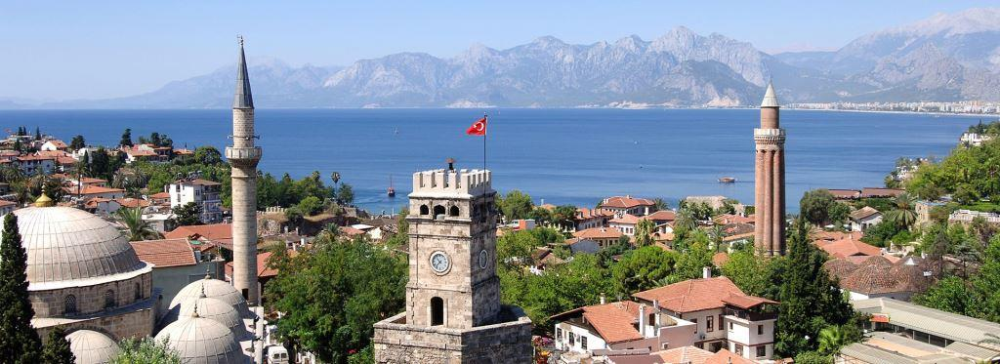

Самый молодой курорт на средиземноморском побережье Турции, главный плюс которого — близость к международному аэропорту. Отели здесь преимущественно городского типа. Огромное множество магазинов, баров, ресторанов, дискотек, аквапарков — жизнь в Анталии бьет ключом! Прогулка по Старому городу добавит в ваш отдых романтики, а шоппинг в торговых центрах Анталии это возможность приобрести одежду, обувь, украшения, ковры и сувениры по приемлемым ценам.
Дюденские водопады. Это каскад водопадов, высота которых достигает 40 м. Любоваться природной достопримечательностью можно с верхнего и нижнего яруса. Водопады сформировались рекой Дюден. Действительно красивое место, обязательное к посещению!
Ворота Адриана. Вторая по посещаемости городская достопримечательность – ворота Адриана. Представляет собой высокую триумфальную арку, построенную в честь римского императора Адриана в 130 году. Включает два колоннадных фасада, три въездные арки, четыре пилона и башни. Высота сооружения – 8 м. Арка служит проходом в Старую часть Анталии.
Археологический музей в Анталии Одна из самых известных достопримечательностей города! Очень посещаемое туристами здание находится по адресу: KonyaaltıCad. 88. Музей занимает территорию в 7 тыс. м². Торжественное открытие состоялось в апреле 1985 года.